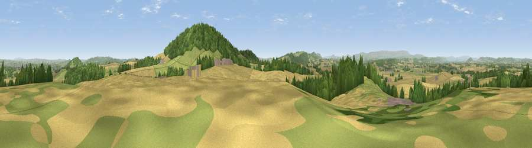

Viewpoint near Callow
#6732 in England · top 19% of its area beats it · near CallowWhere it is
The exact computed spot (SO 49288 34025). Click the marker for map links.
The view, rendered

A 360° render of this exact spot computed from the terrain model, tree cover and land cover — summer colours, afternoon light, calibrated against photographs of famous viewpoints. Real trees, hedges and buildings will differ in detail.
The panorama
Grey silhouette: terrain skyline in each direction (720 bearings, Earth curvature and refraction included). Dashed green: skyline with trees (+15 m) and buildings (+8 m) as obstacles. Blue strip: how far the ground is visible on each bearing.
Where the view opens
Wedge length = distance to the farthest visible ground on that bearing (vegetation-aware). Rings at 10, 25 and 50 km.
What fills the view
46% cropland · 30% grassland · 22% woodland · 2% built-up
Angular shares of the visible panorama (visual magnitude), not map area. Landscape diversity 0.49 (0–1 Shannon).
Key numbers
More beautiful places nearby
The staircase of upgrades: each row has a higher view potential than everything closer. Driving times are estimates from straight-line distance, calibrated against real road routing — check an actual route before setting out.
| Place | Direction | Drive | Score |
|---|---|---|---|
| Viewpoint near Callow | SE · 1 km | ~4 min | 75.9 |
| Viewpoint near Aconbury | SE · 2 km | ~5 min | 76.5 |
| Viewpoint near Orcop Hill | SSW · 6 km | ~12 min | 79.9 |
| Viewpoint near Orcop Hill | SSW · 6 km | ~13 min | 80.7 |
| Garway Hill | SSW · 11 km | ~20 min | 84.6 |
| Millennium Hill | ENE · 27 km | ~43 min | 86.9 |
| Worcestershire Beacon | ENE · 30 km | ~47 min | 87.1 |
| Viewpoint near West Quantoxhead | SSW · 99 km | ~123 min | 87.9 |
52.00234, -2.74014 · source: screening · position refined by local search. Computed location — check access rights before visiting.